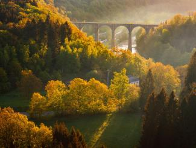

Oude spoorlijn
De Vennbahn
Een oude spoorwegbedding door de Oostkantons: kilometers zacht klimmen en dalen, volledig autovrij.
Zo werkt het
Elk kruispunt in het netwerk heeft een nummer. Je stippelt vooraf een rondje uit — 34 → 87 → 12 → terug — en volgt onderweg alleen de bordjes. Geen kaart-op-het-stuur, geen app nodig: lus zo lang of kort als je zelf wilt, en je komt altijd weer uit waar je begon. In de Ardennen kies je bewust je reliëf: langs de rivieren en over oude spoorlijnen blijft het vlak, wie klimt wordt beloond met de panorama's.
Waar instappen
Een oude spoorwegbedding door de Oostkantons: kilometers zacht klimmen en dalen, volledig autovrij.

Van Durbuy richting La Roche: stadjes, uitkijkpunten en terrassen op fietsafstand van elkaar.

De Semois slingert hier in diepe bochten door de bossen — het decor voor trage kilometers.
Concrete knooppuntlussen met kaart en GPX vullen we samen met de routepartners aan; deze pagina toont de laag en de instappunten.
Hetzelfde systeem bestaat voor wandelaars: genummerde knooppunten, korte en lange lussen, altijd bewegwijzerd.
Praktisch
Het netwerk dekt intussen grote delen van de Waalse Ardennen: de valleien van Ourthe en Semois, de Oostkantons rond de Vennbahn en de streek tussen Maas en Famenne. Elk knooppuntbord toont het lokale netwerk.
Niet als je je route kiest: langs rivieren en spoorwegbeddingen blijft het vlak, en met een e-bike ligt ook het reliëf open. Zwaarte bepaal je zelf, knooppunt per knooppunt.
Dat hangt van je smaak af: de Vennbahn voor het gemak en de verten, de Ourthevallei voor stadjes en terrassen, de Semois voor de stilte. Alle drie zijn instappunten van het netwerk.